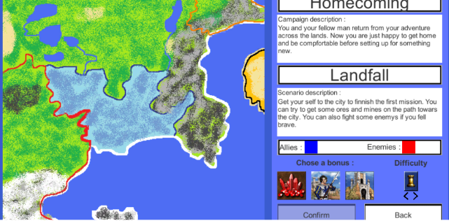
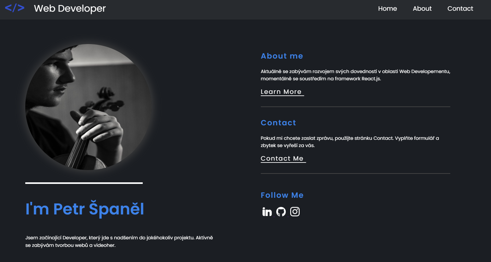

Moje Projekty
Tady jsou nějaké mé projekty, které jsem vytvořil.

Maturitní Projekt
Když jsem začal vytvářet nějaké nové projekty, tak jsem za sebou již měl maturitní projekt...
Zobrazit projekt
Moje Portfolio
Jede z mích projektů, který je stále ve vývoji, je moje portfolio...
Zobrazit projekt💡Další projekty jsou na cestě
Aktuálně teď pracuju na E-shopu kde se snažím naučit prací s Firebase, React, mongoDB a další.
Dále pracuji na rozvoji svých schopností v C++ pro vývoj aplikací.